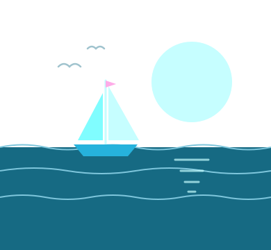
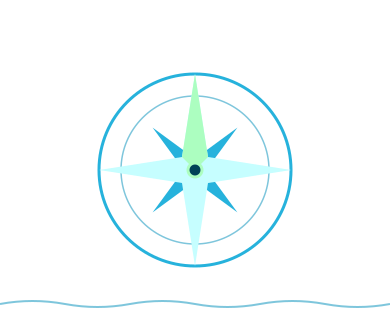

Calm Waters Check-In
Take a moment to orient yourself. Like a sailor finding their bearings, we’ll use your senses to reconnect with the present.
5 senses · about 3 minutes
{{ s.n }}
{{ s.title }}
{{ s.prompt }}
{{ s.hint }}
{{ count }} of {{ s.n }} noticed

You’ve Found Your Bearings
You’ve reconnected with your surroundings and returned to the present moment. Take a deep breath and continue your journey.